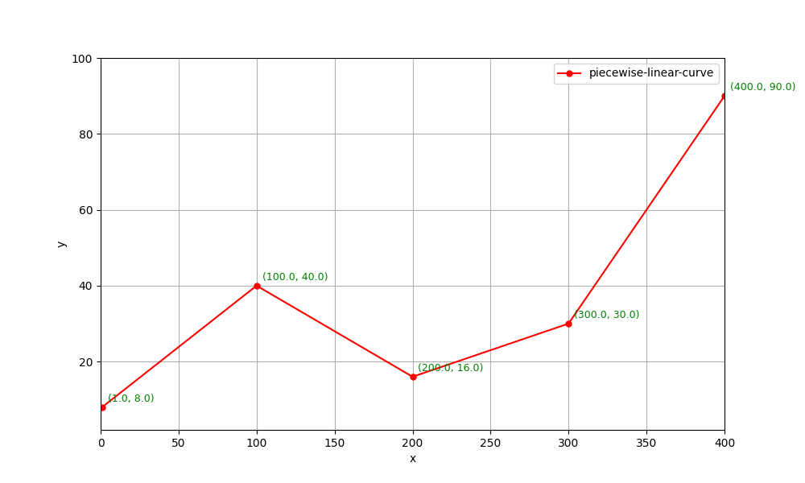
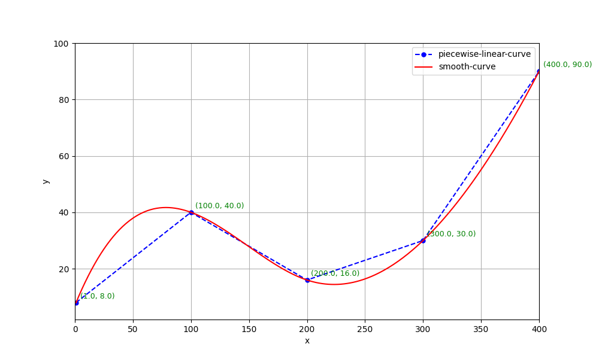
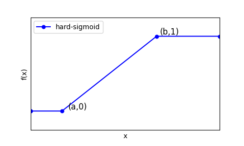
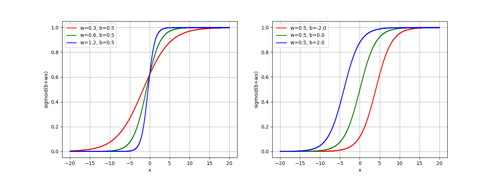
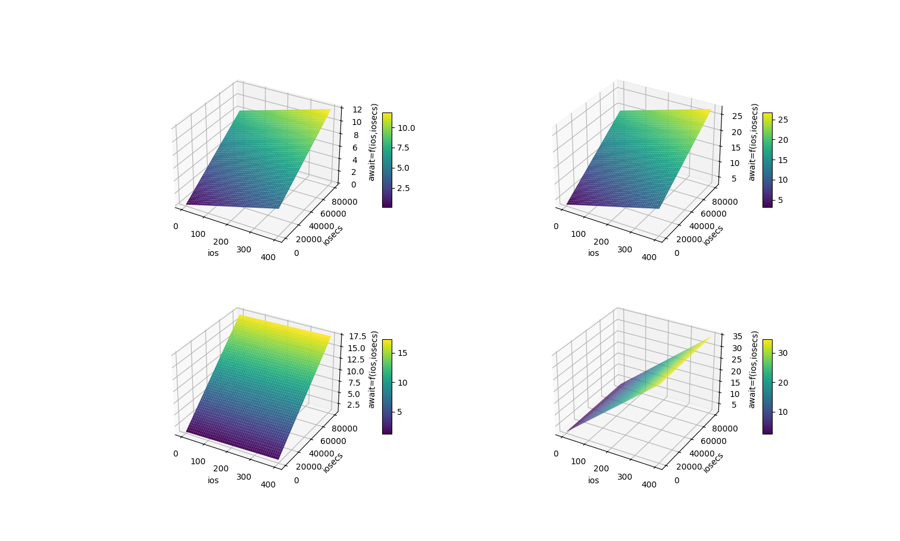
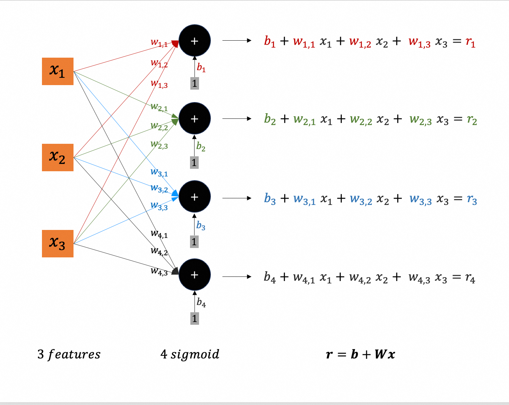
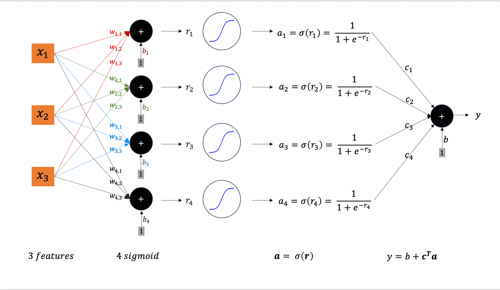
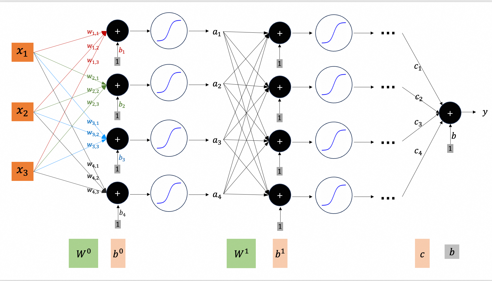

机器学习主要分为监督学习（Supervised Learning）、无监督学习（Unsupervised Learning）、强化学习（Reinforcement Learning）以及半监督学习（Semi-supervised Learning）等范式。
监督学习主要包括两大类基础任务：回归（Regression）和分类（Classification）。回归用于预测连续值（输出为实数），分类则用于预测离散类别标签（输出为有限集合中的某个类别）。此外，结构化学习（Structured Learning）是一类更复杂的监督学习任务，其输出是具有内部结构的对象（如序列、树等），可视为分类或回归的高维扩展。
在分类任务中，模型可分为生成式模型（Generative Models）和判别式模型（Discriminative Models）。生成式模型通过对联合分布 P(x,y) 建模来实现分类，典型方法包括高斯判别分析（GDA）及其两种常见形式——假设协方差矩阵共享的线性判别分析（LDA）和允许协方差矩阵独立的二次判别分析（QDA），以及朴素贝叶斯等。判别式模型则直接建模条件分布 P(y∣x)，代表方法有逻辑回归（Logistic Regression）、支持向量机（SVM）等。
本文介绍回归认为的基础。
问题设定 (1)
现有一些HDD磁盘的性能数据(通过iostat采集)，如下所示：
| idx | rrqms | wrqms | rs | ws | ios | rsecs | wsecs | iosecs | await |
|---|---|---|---|---|---|---|---|---|---|
| 1 | 2.08 | 5.63 | 35.72 | 106.82 | 142.54 | 3200.0 | 14500.0 | 17700.0 | 5.34 |
| 2 | 2.23 | 7.42 | 19.10 | 109.62 | 128.72 | 2600.0 | 15100.0 | 17700.0 | 4.44 |
| 3 | 2.47 | 9.78 | 18.17 | 74.43 | 92.60 | 2700.0 | 8700.0 | 11400.0 | 5.55 |
| 4 | 2.57 | 9.52 | 17.85 | 69.00 | 86.85 | 2900.0 | 8000.0 | 10900.0 | 6.05 |
| 5 | 2.35 | 7.52 | 16.17 | 60.10 | 76.27 | 2400.0 | 7100.0 | 9500.0 | 5.66 |
| 6 | 2.30 | 6.67 | 16.13 | 54.10 | 70.23 | 2400.0 | 6600.0 | 9000.0 | 5.94 |
| 7 | 1.83 | 4.15 | 16.13 | 41.03 | 57.16 | 2300.0 | 4400.0 | 6700.0 | 6.18 |
| 8 | 1.28 | 3.28 | 12.27 | 32.50 | 44.77 | 1600.0 | 3600.0 | 5200.0 | 6.34 |
| 9 | 1.05 | 1.75 | 52.85 | 34.50 | 87.35 | 2300.0 | 3200.0 | 5500.0 | 7.67 |
| 10 | 0.87 | 1900.00 | 118.17 | 46.87 | 165.04 | 18400.0 | 18400.0 | 36800.0 | 26.19 |
| 11 | 0.57 | 1.62 | 54.40 | 30.15 | 84.55 | 2700.0 | 2800.0 | 5500.0 | 7.82 |
| 12 | 0.45 | 1700.00 | 113.00 | 42.75 | 155.75 | 16000.0 | 17200.0 | 33200.0 | 26.00 |
| 13 | 0.57 | 4600.00 | 218.90 | 72.85 | 291.75 | 39000.0 | 40700.0 | 79700.0 | 34.55 |
| 14 | 0.80 | 3300.00 | 178.38 | 65.62 | 244.00 | 29000.0 | 30500.0 | 59500.0 | 30.65 |
| 15 | 0.72 | 2900.00 | 158.85 | 62.03 | 220.88 | 25200.0 | 27300.0 | 52500.0 | 29.51 |
| 16 | 1.37 | 6.77 | 56.90 | 79.83 | 136.73 | 2500.0 | 8400.0 | 10900.0 | 7.22 |
| 17 | 1.60 | 6.48 | 63.85 | 68.55 | 132.40 | 2900.0 | 7900.0 | 10800.0 | 7.52 |
| 18 | 1.23 | 6.03 | 55.65 | 62.70 | 118.35 | 2700.0 | 7200.0 | 9900.0 | 7.54 |
| 19 | 1.53 | 6.03 | 35.93 | 89.67 | 125.60 | 2300.0 | 13700.0 | 16000.0 | 5.92 |
| 20 | 1.53 | 6.82 | 48.83 | 101.32 | 150.15 | 2700.0 | 16100.0 | 18800.0 | 7.42 |
| 21 | 1.73 | 7.48 | 57.03 | 100.82 | 157.85 | 2900.0 | 16400.0 | 19300.0 | 7.13 |
| 22 | 1.95 | 6.03 | 24.35 | 73.90 | 98.25 | 2300.0 | 15000.0 | 17300.0 | 5.95 |
| 23 | 1.90 | 7.02 | 26.77 | 88.12 | 114.89 | 2500.0 | 15400.0 | 17900.0 | 5.04 |
| 24 | 2.20 | 6.72 | 37.12 | 85.57 | 122.69 | 3500.0 | 14600.0 | 18100.0 | 5.67 |
其中：
- rrqms: 每秒合并的read io
- wrqms: 每秒合并的write io
- rs: read io per second
- ws: write io per second
- ios: rs + ws
- rsecs: read sectors (512B) per second, i.e. read bandwidth
- wsecs: write sectors (512B) per second, i.e. write bandwidth
- iosecs: rsecs + wsecs, i.e. total bandwidth
- await: latency in milliseconds
要通过机器学习的方法，找出await与其它指标(ios, rs, ws, iosecs, rsecs, wsecs, …)的关系，即：
$$
await = f(x_1, x_2, …)
$$
其中$x1$, $x2$, … 代表磁盘的其它指标(ios, rs, ws, iosecs, rsecs, wsecs, …)；
有了这个模型之后，就可以判断一个磁盘是否故障：若实际await高出模型计算出的期望await太多（例如实际await大于2倍的期望await），就判定为故障。
学习的效果，通过测试数据来检验：
机器学习最简过程 (2)
所谓机器学习（训练），就是要生成一个上一节提到的函数$f$；分为3步：
- step1: 定义模型，即一个带有未知参数的函数
- step2: 定义损失函数；
- step3: 优化（梯度下降），以确定step1中的未知参数；
这里“参数”的意义不同意编程中的参数；以C语言为例
1 | float f(float x1, float x2) |
其中的x1和x2是参数；但在机器学习中，w1、w2和b是参数。因为机器学习的过程不是函数$f$执行的过程，而是寻找函数$f$的过程；在模型确定的情况下，就是寻找或者确定参数的值（有点类似于待定系数法？）。函数$f$的input x1和x2叫特征。例如:
- 有一个函数$f$，input是重量、颜色，output是“花或者叶子”；重量和颜色是待判断目标的特征。
- 本例机器学习完成之后得到一个函数$f$，input是
ios和iosecs，output是预期await；ios和iosecs是样本的特征。
定义模型 (2.1)
先假定只有ios这一个input，即只通过ios这一个指标来预测磁盘的await；
拍脑袋猜测它们是线性关系，即
$$
await = f(x) = w \cdot x
$$
其中$x$代表input ios，$w$即未知参数。

- 注意1：实际工程中，选择模型需要专业知识（domain knowledge）；
- 注意2：这里假定模型只有一个未知参数$w$；很多课程此时会假定有2个参数，除$w$外还有一个$b$（叫做bias）；我们从最简单的情形开始：只有一个参数时，损失函数的图像（叫做Error Surface）是一条曲线，计算其微分也不涉及偏微分。搞明白道理之后，再扩展为2个及更多参数。
在选定一次函数且无bias的情况下，模型的好坏完全取决于唯一参数$w$。机器学习（训练）的过程，就是找到一个最优的$w$，使得通过模型计算出来的结果和真实结果最接近；

显然，$w=0.1$比$w=0.6$的损失要小！如何衡量模型计算出来的结果和真实结果是否接近呢？
定义损失函数 (2.2)
损失函数用来衡量$w$有多好。对于我们的例子，可以这样：
- 使用模型计算await；
- 和真实的await做差，然后再平方；24条训练数据，会得到24个平方；
- 把这些平方累加起来；
注意：一般情况，还会对累加结果再开根号；为了简单这里也不再开根号了，反正它们的趋势是一样的；
$$
L(w) = \sum_{n=1}^{24} (w x_n - a_n)^2
$$
其中：$x_n$代表$ios_n$，$a_n$代表$await_n$；$n \in {1, …, 24}$；这些就是训练数据，是已知的；所以，这个函数的表达式可以精确地写出来：
$$
L(w) = 480116.3739 w^2 - 90710.8016 w + 5146.6270
$$

显然，当
$$
w = - \frac{-90710.8016}{2 \cdot 480116.3739} = 0.0944
$$
时，损失最小:
$$
L = 862.0172
$$
现实中的损失函数很复杂，不可能求出解析解。即使有的损失函数有解析解，参数动辄几百亿，以算法复杂度$O(n^3)$为例，算到地球毁灭也算不出来。所以，只能通过梯度下降的办法去寻求局部最优解，或者在有限次迭代之后停止！。
这里已知最优解，为了展示梯度下降方法是如何找到它的。
梯度下降 (2.3)
首先，随机选择一个点$w^0$，计算损失函数$L(w)$在$w=w^0$处的导数$\frac{dL}{dw}\big|_{w=w^0}$；假如导数等于0，说明点$w^0$刚好就是最优解。学习终止。否则：
- 假如导数小于0，说明点$w^0$在最优解$w = 0.0944$的左侧；向右寻找：$w^1 = w^0 - \eta \frac{dL}{dw}\big|_{w=w^0}$
- 假如导数大于0，说明点$w^0$在最优解$w = 0.0944$的右侧；向左寻找：$w^1 = w^0 - \eta \frac{dL}{dw}\big|_{w=w^0}$
所以，无论是哪种情况，下一个更优解$w^1$都是:
$$
w^1 = w^0 - \eta \frac{dL}{dw}\big|_{w=w^0}
$$
其中$\eta$是一个提前选定的大于0的常数，叫做learning rate，表示每一步前进的幅度或者步幅。
在机器学习中，提前选定的常数（不是通过学习得到）叫做hyper-parameter。

按照这个思路迭代，每次更新$w$：
$$
w^{n+1} = w^n - \eta \frac{dL}{dw}\big|_{w=w^n}
$$
直到导数为0，或者迭代次数到达上限，比如100万次。最大迭代次数，也是一个hyper-parameter。
假设：
$$
\begin{aligned}
& \eta = 0.000001 \\
& w^0 = 5000.0
\end{aligned}
$$
下面是9轮迭代的参数更新记录：
$$
\begin{aligned}
& d = 4801073028.1984, w = 198.9270, L = 18981096715.4305 \\
& d = 190925481.9430, w = 8.0015, L = 30018218.9515 \\
& d = 7592581.7918, w = 0.4089, L = 48332.4943 \\
& d = 301936.1150, w = 0.1070, L = 937.0864 \\
& d = 12007.1696, w = 0.0950, L = 862.1337 \\
& d = 477.4921, w = 0.0945, L = 862.0152 \\
& d = 18.9886, w = 0.0945, L = 862.0150 \\
& d = 0.7551, w = 0.0945, L = 862.0150 \\
& d = 0.0300, w = 0.0945, L = 862.0150
\end{aligned}
$$
注意：若$\eta$选择的不好（例如大一点），学习不但不会收敛，反而会迅速发散。想象一下：若$w^n$在对称轴右侧，距离100；下次更新，$w^{n+1}$肯定在$w^n$的左边，但如果$\eta$太大，$w^{n+1}$被更新到对称轴左边，并且距离超过100；距离最优解更远了。以此类推，$w^{n+2}$被更新到对称轴右侧，且距离进一步加大…… 这时最常用的手段是降低$\eta$。
增加参数(3)
假如还是假设await与ios是线性关系，但增加一个参数$b$ （bias）。一方面，猜测ios接近0时，也有个基础的await（不一定准），bias可以捕捉到它；另外一方面，增加一个参数，更重要的目的是为了展示：
- 一个输入特征（
ios）也可以有多个待定参数； - 多个待定参数，优化（梯度下降）如何进行；2个待定参数时，损失函数图像（Error Surface）是一个曲面；
定义模型 (3.1)
$$
await = f(x) = w \cdot x + b
$$
定义损失函数 (3.2)
和之前一样，但预测值变成$w x_n + b$，且损失函数有两个参数。所以损失函数变成：
$$
L(w,b) = \sum_{n=1}^{24} (w x_n + b - a_n)^2
$$
其中：$x_n$代表$ios_n$，$a_n$代表$await_n$；$n \in {1, …, 24}$；代入24条训练数据，得到：
$$
L(w,b) = 480116.3739 w^2 + 6210.7400 w b + 24.0000 b^2 - 90710.8016 w - 534.6000 b + 5146.6270 \\
$$

同样可以求出解析最优值：
$$
\begin{aligned}
& w = 0.1375 \\
& b = -6.6562 \\
& L = 688.5764
\end{aligned}
$$
下面演示如何通过梯度下降的方法逼近它。
梯度下降 (3.3)
流程 (3.3.1)
- 随意选择一个点，只不过，这个点是二维的:
$$
\begin{aligned}
(w^0, b^0)
\end{aligned}
$$
- 在这个点，对两个参数分别求偏导数，并按第2.3节的方式更新参数：
$$
\begin{aligned}
\\
& w^1 = w^0 - \eta \frac{\partial L}{\partial w}\big|_{w=w^0,b=b^0} \\
\\
& b^1 = b^0 - \eta \frac{\partial L}{\partial b}\big|_{w=w^0,b=b^0} \\
\\
\end{aligned}
$$
这就完成了一次参数更新。
继续迭代，直到两个方向上的偏导数都为0，或者达到提前设置的最大迭代次数（hyper-parameter）。
执行 (3.3.2)
损失函数对于$w$和$b$的偏导数分别是：
$$
\begin{aligned}
\\
& \frac{\partial L}{\partial w} = 2 \cdot 480116.3739 w + 6210.7400 b - 90710.8016 \\
\\
& \frac{\partial L}{\partial b} = 2 \cdot 24.0000 b + 6210.7400 w - 534.6000 \\
\\
\end{aligned}
$$
使用python实现:
1 | #!.venv/bin/python3 |
运行结果：
1 | Iter: 0: dw = 4801694102.1984, db = 31057965.4000, w = 198.3059, b = 68.9420, L = 18947691102.9664 |
向量写法 (3.3.3)
约定小写字母表示标量（数字），如$a, b$。黑体小写字母表示列向量，如$\boldsymbol{a}, \boldsymbol{b}, \boldsymbol{\theta}$；要表示行向量，需要转置，如$\boldsymbol{a}^\top, \boldsymbol{b}^\top, \boldsymbol{\theta}^\top$。黑体大写字母表示矩阵，例如$\boldsymbol{W}, \boldsymbol{Q}, \boldsymbol{K}$。
- 两个参数写成一个向量$\boldsymbol{\theta}$形式：
$$
\boldsymbol{\theta} = \begin{bmatrix}
w \\
b
\end{bmatrix}
$$
- 随机选择的初始点写作：
$$
\boldsymbol{\theta}^0 = \begin{bmatrix}
w^0 \\
b^0
\end{bmatrix}
$$
- 在$\boldsymbol{\theta}^0$点处，对于各个方向的偏导数，写作：
$$
\boldsymbol{g}^0 = \begin{bmatrix}
\frac{\partial L}{\partial w}\big|_{\boldsymbol{\theta}=\boldsymbol{\theta}^0} \\
\frac{\partial L}{\partial b}\big|_{\boldsymbol{\theta}=\boldsymbol{\theta}^0}
\end{bmatrix}
$$
其中$\boldsymbol{g}$就是梯度（gradient）。数学上就是，二维空间中（即曲面上）某点处的各个维度上的偏导数。
本质上，梯度$\boldsymbol{g}^0$是从$\boldsymbol{\theta}^0$到更优点的一个矢量（方向是反的，即从更优点指向$\boldsymbol{\theta}^0$）。要往更优点行进，首先要把方向颠倒过来，即乘以一个负数（$-\eta$），行进的距离多少取决于$\eta$。所以，更优点$\boldsymbol{\theta}^1 = \boldsymbol{\theta}^0 + (-\eta \boldsymbol{g}^0)$。
负梯度指向下降最快的方向，这是梯度下降法的核心。为什么说下降最快呢？因为各个维度都是下降的。一个维度上如何确保下降，见第2.3节的函数图像演示。这里只是推广到多维。
梯度（gradient）用梯度算子$\boldsymbol{\nabla}$（读作nabla）表示:
$$
\boldsymbol{g}^0 = \boldsymbol{\nabla}L(\boldsymbol{\theta}^0)
$$
- 参数向量的更新过程：
$$
\begin{bmatrix}
w^1 \\
b^1
\end{bmatrix} = \begin{bmatrix}
w^0 \\
b^0
\end{bmatrix} - \begin{bmatrix}
\eta \frac{\partial L}{\partial w} \big|_{\boldsymbol{\theta}=\boldsymbol{\theta}^0} \\
\eta \frac{\partial L}{\partial b} \big|_{\boldsymbol{\theta}=\boldsymbol{\theta}^0}
\end{bmatrix}
$$
表示成：
$$
\boldsymbol{\theta}^1 = \boldsymbol{\theta}^0 - \eta \boldsymbol{\nabla}L(\boldsymbol{\theta}^0) = \boldsymbol{\theta}^0 - \eta \boldsymbol{g}^0
$$
- 迭代过程：
$$
\begin{aligned}
& \boldsymbol{\theta}^1 = \boldsymbol{\theta}^0 - \eta \boldsymbol{g}^0 \\
& \boldsymbol{\theta}^2 = \boldsymbol{\theta}^1 - \eta \boldsymbol{g}^1 \\
& \boldsymbol{\theta}^3 = \boldsymbol{\theta}^2 - \eta \boldsymbol{g}^2 \\
& …
\end{aligned}
$$
推广到多维 (3.3.4)
- 多个参数写成一个向量$\boldsymbol{\theta}$的形式：
$$
\boldsymbol{\theta} = \begin{bmatrix}
\theta_1 \\
\theta_2 \\
\theta_3 \\
…
\end{bmatrix}
$$
- 随机选择的初始点写作：
$$
\boldsymbol{\theta}^0 = \begin{bmatrix}
\theta_1^0 \\
\theta_2^0 \\
\theta_3^0 \\
…
\end{bmatrix}
$$
- 在$\boldsymbol{\theta}^0$点处，对于各个方向的偏导数，写作：
$$
\boldsymbol{g}^0 = \begin{bmatrix}
\frac{\partial L}{\partial \theta_1}\big|_{\boldsymbol{\theta}=\boldsymbol{\theta}^0} \\
\frac{\partial L}{\partial \theta_2}\big|_{\boldsymbol{\theta}=\boldsymbol{\theta}^0} \\
\frac{\partial L}{\partial \theta_3}\big|_{\boldsymbol{\theta}=\boldsymbol{\theta}^0} \\
…
\end{bmatrix}
$$
其中$\boldsymbol{g}$就是梯度（gradient）。数学上就是，多维空间中某点处的各个维度上的偏导数。
本质上，梯度$\boldsymbol{g}^0$是从$\boldsymbol{\theta}^0$到更优点的一个矢量（方向是反的，即从更优点指向$\boldsymbol{\theta}^0$）。要往更优点行进，首先要把方向颠倒过来，即乘以一个负数（$-\eta$），行进的距离多少取决于$\eta$。所以，更优点$\boldsymbol{\theta}^1 = \boldsymbol{\theta}^0 + (-\eta \boldsymbol{g}^0)$。
负梯度指向下降最快的方向，这是梯度下降法的核心。说下降最快，是因为各个维度都是下降的。
梯度（gradient）用梯度算子$\boldsymbol{\nabla}$（读作nabla）表示:
$$
\boldsymbol{g}^0 = \boldsymbol{\nabla}L(\boldsymbol{\theta}^0)
$$
- 参数向量（多个参数构成一个向量）的更新过程：
$$
\begin{bmatrix}
\theta_1^1 \\
\theta_2^1 \\
\theta_3^1 \\
…
\end{bmatrix} = \begin{bmatrix}
\theta_1^0 \\
\theta_2^0 \\
\theta_3^0 \\
…
\end{bmatrix} - \begin{bmatrix}
\eta \frac{\partial L}{\partial \theta_1} \big|_{\boldsymbol{\theta}=\boldsymbol{\theta}^0} \\
\eta \frac{\partial L}{\partial \theta_2} \big|_{\boldsymbol{\theta}=\boldsymbol{\theta}^0} \\
\eta \frac{\partial L}{\partial \theta_3} \big|_{\boldsymbol{\theta}=\boldsymbol{\theta}^0} \\
…
\end{bmatrix}
$$
表示成：
$$
\boldsymbol{\theta}^1 = \boldsymbol{\theta}^0 - \eta \boldsymbol{\nabla}L(\boldsymbol{\theta}^0) = \boldsymbol{\theta}^0 - \eta \boldsymbol{g}^0
$$
- 迭代过程：
$$
\begin{aligned}
& \boldsymbol{\theta}^1 = \boldsymbol{\theta}^0 - \eta \boldsymbol{g}^0 \\
& \boldsymbol{\theta}^2 = \boldsymbol{\theta}^1 - \eta \boldsymbol{g}^1 \\
& \boldsymbol{\theta}^3 = \boldsymbol{\theta}^2 - \eta \boldsymbol{g}^2 \\
& …
\end{aligned}
$$
梯度下降是优化参数的大方针，但它也会面临各种挑战，这些细节以后再说，现在姑且认为它就是行之有效的办法。
逼近任意曲线 (4)
前面选择的模型函数是
$$
await = f(x) = w \cdot x
$$
或者
$$
await = f(x) = w \cdot x + b
$$
它是一条直线。假如学习的目标函数是一条折线（如下图），无论$w$和$b$选择的有多好，逼近效果都不会太好。

说明：现实中磁盘$await$和$ios$的关系肯定不是这样。实际上，前面选择的线性关系表现的还不错（在正常压力范围内，磁盘的$await$的确和$ios$正相关）。这里只是假设output和input（特征）成这种奇怪的关系，目的是介绍如何逼近任意曲线。
假如目标函数是任意曲线，也可以看作一条折线，因为可以通过折线逼近它。

所以，下文统一把目标函数看作一条折线。
激活函数 (4.1)
激活函数由于构建弹性更强的函数模型。弹性强是指：无论真实的目标函数曲线是什么样子，都可以无限逼近。
Sigmoid (4.1.1)
Hard sigmoid函数
$$
\begin{aligned}
f(x) =
\begin{cases}
0 & \text{if } x <= a, \\
\frac{1}{b-a}(x-a) & \text{if } a < x <= b, \\
1 & \text{if } x > b.
\end{cases}
\end{aligned}
$$
它的图像是：

可见，只需2个参数就能唯一确定一个hard-sigmoid函数。所以，可以把它记为$h_{a,b}(x)$
图6中的折线就可以表示为：
$$
f(x) = 8 + 32 \cdot h_{1,100}(x) + (-24) \cdot h_{100,200}(x) + 14 \cdot h_{200,300}(x) + 60 \cdot h_{300,400}(x)
$$
也就是，可以通过常数$d$加上多个$c \cdot h_{a,b}(x)$组合出任意折线，进而逼近任意曲线。
但是，
$$
h_{a,b}(x) = f(x) =
\begin{cases}
0 & \text{if } x <= a, \\
\frac{1}{b-a}(x-a) & \text{if } a < x <= b, \\
1 & \text{if } x > b.
\end{cases}
$$
不方便写。故通过下面这个函数来模拟它：
$$
s_{w,b}(x) = \frac{1}{1+e^{-(b+wx)}}
$$
注意到，
$$
\sigma(x) = sigmoid(x) = \frac{1}{1+e^{-x}}
$$
所以，$s_{w,b}(x)$ 就是$sigmoid(b+wx)$，记做$\sigma(b+wx)$（把自变量替换成$b+wx$）。

为什么$\sigma(b+wx)$可以模拟$h_{a,b}(x)$呢？$w$为正数，
- 当x为负无穷：$\sigma(b+wx) = 0$
- 当x为负正穷：$\sigma(b+wx) = 1$
并且：
- 调整$w$可以改变曲线的陡峭程度，即$h_{a,b}(x)$中$a$和$b$的距离；
- 调整$b$可以平易曲线，即$h_{a,b}(x)$中$a$和$b$的位置；
所以，这两者近似等价：
- 使用$c \cdot h_{a,b}(x)$构造模型函数，然后去学习参数$c$、$a$和$b$；
- 使用$c \cdot \sigma(b+wx)$构造模型函数，然后去学习参数$c$、$w$和$b$；
回顾一下：
任意目标曲线可以看作折线；
任意折线可以通过如下函数精确组合而出；
$$
f(x) = b + \sum\limits_{i=1}^m c_i \cdot h_{a_i,b_i}(x)
$$
- 任意如上函数可以通过如下函数模拟；
$$
f(x) = b + \sum\limits_{i=1}^m c_i \cdot \sigma(b_{i}+w_{i}x)
$$
所以，这是一个弹性强的函数模型，$m$越大弹性越强，其中$m$又是一个hyper-parameter！
ReLU (4.1.2)
ReLU 是另一种激活函数，用于构建函数模型，其原理和sigmoid一样。
重复学习过程 (4.2)
假如hyper-parameter $m=3$
函数模型
$$
\begin{aligned}
await = f(x) = b + c_{1}\sigma(b_{1}+w_{1}x) + c_{2}\sigma(b_{2}+w_{2}x) + c_{3}\sigma(b_{3}+w_{3}x)
\end{aligned}
$$
待定参数是$b,w_1,b_1,c_1,w_2,b_2,c_2,w_3,b_3,c_3$。
损失函数
$$
L(b,w_1,b_1,c_1,w_2,b_2,c_2,w_3,b_3,c_3) = \sum_{n=1}^{24} (f(x_n) - a_n)^2
$$
其中：$(x_n,a_n)$代表$(ios_n, await_n)$，$n \in {1, …, 24}$，是训练数据，已知！所以函数$L$展开之后，变量只有$b,w_1,b_1,c_1,w_2,b_2,c_2,w_3,b_3,c_3$。
可见：
- 损失函数的变量，就是函数模型中的未知参数；
- 一个输入特征（例如$ios$），就可以引入多个未知参数，如这里7个；
- 并且，对于损失函数而言，哪个变量（未知参数）是由哪个输入特征引入的，已经毫无意义了；它们一视同仁，都是损失函数的一个变量；
- 引入损失函数的目的，是通过训练数据优化那些未知参数，使得它取到最小值（理想）。此时，函数模型最接近真实目标函数（起码对训练数据集而言是这样）；
优化
梯度下降和前文一模一样，一般形式见第3.3.4节。
增加输入特征 (5)
到目前为止，只考虑$ios$（读写iops之和）这一个输入特征，现在增加另一个特征$iosecs$（读写带宽之和，以sector为单位）。
线性模型 (5.1)
- 函数模型
$$
await = f(x_{1},x_{2}) = w_{1} ios + w_{2} iosecs + b = w_{1} x_{1} + w_{2} x_{2} + b
$$
其中，$x_{1}$代表特征$ios$，$x_{2}$代表特征$iosecs$；$w_{1}$，$w_{2}$和$b$（可以认为是$b_{1}+b_{2}$之和）是待定参数。

- 损失函数
$$
L(w_{1},w_{2},b) = \sum\limits_{n=1}^{24} (w_{1} ios_{n} + w_{2} iosecs_{n} + b - await_n)^2
$$
其中$(ios_n, iosecs_n, await_n)$，$n \in {1, …, 24}$，是训练数据，已知！所以，函数$L(w_{1},w_{2},b)$可以精确地写出来，其中变量只有$w_1, w_2, b$。
$$
\begin{aligned}
L(w_{1},w_{2},b) = & k_{1} \cdot {w_{1}}^2 + k_{2} \cdot {w_{2}}^2 + k_{3} \cdot {b}^2 + \\
& k_{4} \cdot w_{1}w_{2} + k_{5} \cdot w_{1}b + k_{6} \cdot w_{2}b + \\
& k_{7} \cdot w_{1} + k_{8} \cdot w_{2} + k_{9} \cdot b + \\
& k_{10}
\end{aligned}
$$
其中$k_{1}, k_{2}, \cdots, k_{10}$都是常数，可以使用训练数据计算出来。
- 优化
梯度下降一般形式见第3.3.4节，并无区别。
弹性模型 (5.2)
从图10可知，假如选择线性模型，$await=f(ios,iosecs)$一定是一个平面。假如真实目标函数$await=real(ios,iosecs)$是一个曲面，无论$w_1,w_2,b$选择的有多好，逼近效果都不会太好。也就是说，线性模型没有弹性。
所以需要使用激活函数来组合构建模型，只是扩展到2维。
一维场景下，线性模型
$$
f(x) = b + w \cdot x
$$
对应的弹性模型是（$i$是激活函数的个数）
$$
f(x) = b + \sum\limits_{i=1}^m c_i \cdot \sigma(b_{i}+w_{i}x)
$$
二维场景下，线性模型
$$
f(x_1,x_2) = b + w_{1} x_{1} + w_{2} x_{2}
$$
对应的弹性模型是（$i$是激活函数的个数）
$$
f(x_1,x_2) = b + \sum\limits_{i=1}^m c_i \cdot \sigma(b_{i}+w_{i,1}x_{1}+w_{i,2}x_{2})
$$
其过程是：
- 把多个特征线性组合，例如2个特征，得到3D空间中的一个平面；
- 对平面上的一点$(x,y,z)$，取$z^\prime=c\cdot\sigma(z)$，映射到另一个点$(x,y,z^\prime)$；
- 所有点都做如上映射，于是平面变成曲面；
- $m$很小时，把一个平面改变成多个平面碎片拼成的折面；
- $m$增大时，折面逐渐变得光滑；
注意：若机逐个械替换$w \cdot x$部分，会得到
$$
\begin{equation}
f(x_1,x_2) = b + \sum\limits_{i=1}^m c_i \cdot \sigma(b_{i}+w_{1,i}x_{1}) + \sum\limits_{i=1}^m c_i \cdot \sigma(b_{i}+w_{2,i}x_{2})
\tag{incorrect}
\end{equation}
$$
其过程是：
- 对一个维度使用多个激活函数累加；
- 把各个维度累加的结果再累加起来；
为什么不对呢？AI回答如下：
首先，定义可加分离（additively separable。若一个二元函数（可以推广到多维）能写成：
$$
f(x_{1},x_{2}) = b + g_{1}(x_{1}) + g_{2}(x_{2})
$$
形式，则它是可加分离的。它的混合偏导数恒为零：
$$
\frac{\partial^{2}f}{\partial x_{1} \partial x_{2}} \equiv 0
$$
- 若目标函数是可加分离的，则incorrect模型也可行！因为它能够无限逼近目标函数：
$\sum_{i} c_i \cdot \sigma(b_{i}+w_{1,i}x_{1})$可以逼近任意一元函数$g_{1}(x_{1})$；
$\sum_{i} c_i \cdot \sigma(b_{i}+w_{2,i}x_{2})$可以逼近任意一元函数$g_{2}(x_{2})$；
- 若目标函数是不可加分离的，则incorrect模型不可行，因为它无法建模变量间的交互。假如目标函数是
$$
f(x_{1},x_{2}) = x_{1} \cdot x_{2}
$$
或者
$$
f(x_{1},x_{2}) = max(x_{1},x_{2})
$$
或者
这些函数都依赖于$x_{1}$和$x_{2}$的联合信息，而incorrect模型永远无法精确表示它们，因为：固定$x_{2}$，$f$对$x_{1}$的响应形状不能随$x_{2}$改变。
简言之：incorrect模型是可加分离的（additively separable），若目标函数是不可加分离的，则模型无法逼近它，无论$m$（激活函数个数）多大。
回到正题！重申函数模型：
$$
f(x_1,x_2) = b + \sum\limits_{i=1}^m c_i \cdot \sigma(b_{i}+w_{i,1}x_{1}+w_{i,2}x_{2})
$$
其中，$b,c_1,b_1,w_{1,1},w_{1,2},c_2,b_2,w_{2,1},w_{2,2},\cdots,c_m,b_m,w_{m,1},w_{m,2}$为待定参数。
定义损失函数：
$$
L(b,c_1,b_1,w_{1,1},w_{1,2},c_2,b_2,w_{2,1},w_{2,2},\cdots,c_m,b_m,w_{m,1},w_{m,2}) =
\sum\limits_{n=1}^{24} f(ios_{n},iosecs_{n})^2
$$
代入训练数据，变量只剩$b,c_1,b_1,w_{1,1},w_{1,2},c_2,b_2,w_{2,1},w_{2,2},\cdots,c_m,b_m,w_{m,1},w_{m,2}$。
梯度下降的方法如前。
一般形式 (6)
推广到$j$个输入特征，函数模型：
$$
f(x_1,x_2,\cdots,x_j) = b + \sum\limits_{i=1}^m c_i \cdot \sigma(b_{i} + \sum\limits_{j=1}^t w_{i,j}x_{j})
$$
例如，3个输入特征（$j \in {1,\cdots,3}$），4个激活函数（$i \in {1,\cdots,4}$）
$$
\begin{aligned}
f(x_1,x_2,x_3) = b & + c_1 \cdot \sigma(b_{1} + w_{1,1}x_{1} + w_{1,2}x_{2} + w_{1,3}x_{3}) \\
& + c_2 \cdot \sigma(b_{2} + w_{2,1}x_{1} + w_{2,2}x_{2} + w_{2,3}x_{3}) \\
& + c_3 \cdot \sigma(b_{3} + w_{3,1}x_{1} + w_{3,2}x_{2} + w_{3,3}x_{3}) \\
& + c_4 \cdot \sigma(b_{4} + w_{4,1}x_{1} + w_{4,2}x_{2} + w_{4,3}x_{3})
\end{aligned}
$$

$$
\begin{bmatrix}
r_1 \\
r_2 \\
r_3 \\
r_4
\end{bmatrix} = \begin{bmatrix}
b_1 \\
b_2 \\
b_3 \\
b_4
\end{bmatrix} + \begin{bmatrix}
w_{1,1} & w_{1,2} & w_{1,3} \\
w_{2,1} & w_{2,2} & w_{2,3} \\
w_{3,1} & w_{3,2} & w_{3,3} \\
w_{4,1} & w_{4,2} & w_{4,3}
\end{bmatrix} \begin{bmatrix}
x_1 \\
x_2 \\
x_3
\end{bmatrix}
$$
约定小写字母表示标量（数字），如$a, b$。黑体小写字母表示列向量，如$\boldsymbol{a}, \boldsymbol{b}, \boldsymbol{\theta}$；要表示行向量，需要转置，如$\boldsymbol{a}^\top, \boldsymbol{b}^\top, \boldsymbol{\theta}^\top$。黑体大写字母表示矩阵，例如$\boldsymbol{W}, \boldsymbol{Q}, \boldsymbol{K}$。
所以，上述运算写作：
$$
\boldsymbol{r} = \boldsymbol{b} + \boldsymbol{W} \boldsymbol{x}
$$
继续，代入激活函数

使用公式表示为：
$$
y = b + \boldsymbol{c}^\top \sigma(\boldsymbol{b + Wx})
$$
损失函数的参数变得更多了:
$$
\boldsymbol{\theta} = \begin{bmatrix}
w_{1,1} \\
w_{1,2} \\
\cdots \\
w_{i,j} \\
b_{1} \\
b_{2} \\
\cdots \\
b_{i} \\
c_{1} \\
c_{2} \\
\cdots \\
c_{i} \\
b
\end{bmatrix}
$$
代入训练数据之后，损失函数的变量就是这些。在损失函数中不用关心每个参数如何引入的、和哪个feature有关以及在模型函数中是什么意义，统一视为变量，记做：
$$
\boldsymbol{\theta} = \begin{bmatrix}
\theta_1 \\
\theta_2 \\
\theta_3 \\
\cdots
\end{bmatrix}
$$
优化（梯度下降）和第3.3.4节并无区别。
深度学习 (7)
为了进一步增加弹性，叠加多层，就是深度学习。

可以证明，增加一层，弹性只会增大，不会减小。因为：即使增加的一层什么都不做，把$a_1, a_2, \cdots$原样输出，逼近效果就保持不变而已，没有变差。当然，参数也就变的更多（图中$\boldsymbol{W^0, b^0, W^1, b^1, c}, b$）。
增加宽度（增加$sigmoid$函数的个数），也能增加弹性，为什么不选择增加宽度呢？
Batch与Epoch (8)
把训练数据分成$N$份，每份叫做一个batch。前面例子中训练数据有24条，随机（先shuffle再分）分成4个batch，每个batch 6条记录（$N=4, BatchSize=6$）。
使用一个batch生成一个损失函数$L$，做一次梯度下降，更新一次参数。过程和使用整个训练数据一样，只是代入6条记录，而不是24条。
所以，一遍下来，参数被更新4次（4个batch，即$N=4$），叫一个epoch。
下一个epoch开始之前，再次shuffle、分batch、逐batch优化参数。
这有什么好处呢？
首先，大batch（或不分batch）训练速度更快，小batch更慢。因为可以利用GPU的并行能力。例如有10000条训练数据，$BatchSize=1, N=10000$，每个batch计算损失函数$L$只代入一条数据，不能充分利用GPU的能力。而$BatchSize=1000, N=10$可以更好地并行计算。
但是，分batch（多个小batch）可以引入“噪音”，有利于对抗“梯度消失”，即卡在Critical Point上（梯度为0的点，Local Minimum/Local Maximum/Saddle Point）。试想，代入所有数据生成一个损失函数$L$，优化的过程中，更容易卡在某个Critical Point上。而分多个batch，每个batch对应的$L^i$，其Error Surface和$L$差不多，但可能发生压缩、拉伸和平移。每次更新都换一个$L^i$，所有$L^i$的Critical Point都重合的可能性就比较小。
小结 (9)
- 机器学习的目的就是找到、或者生成一个函数$f$。这个函数看上去具有智能，例如输入磁盘$ios$输出$await$、输入声音输出文字、输入围棋局面输出下一个落子位置，等等。
- 机器学习分三步：
- 依靠domain knowledge选择一个带未知参数的模型；
- 定义损失函数；
- 随机选择初始参数，然后通过梯度下降的方法优化参数；
- 涉及4个函数图形：
- A：目标函数。其实目标函数图像无法画出来。例如磁盘$ios$和$await$的真实关系。可以把训练数据看作一个个离散点（$ios$和$await$关系是二维平面的上的离散点；现实中更多是高维空间中的离散点），目标函数肯定经过这些点。所以，我们假想有这么一条曲线，模型函数就是去逼近这条曲线。
- B：模型函数，就是机器学习找到、或者生成的函数。它的图形约接近理想中的目标函数越好。例如：真实磁盘$await$和$ios$的关系可能是分段的，$ios$较小时成线性；超过某个阈值后指数增长。前面假设的线性关系，就不会太好（题外话：不过训练数据没有体现出来，应该没有达到阈值）。
- C：待定参数取某组（某个）特定值时，预测数据与真实数据（训练数据）之间的差距，即两条折线离多远。这就需要损失函数来衡量。
- D：损失函数；图象叫做Error Surface。自变量是待定参数，因变量是损失多少。优化就是在损失函数图像上进行梯度下降。